Welkom op de ultieme bestemming voor autoliefhebbers!
Wat is een supercar nou eigenlijk en welk onderscheid maakt het ten opzichte van een normale auto?
Supercars onderscheiden zich van normale auto's door hun fenomenale motoren, indrukwekkend koppel, geavanceerde technologieën zoals turbochargers en superchargers, unieke motorgeluiden, verbluffende ontwerpen, nauwe banden met de autosport, sensationele rijervaringen en de aanwezigheid van iconische modellen. Ze belichamen de droom van snelheid en precisie en blijven de verbeelding van autoliefhebbers wereldwijd prikkelen.
Krachtige Motoren:
Supercars zijn synoniem met buitengewoon krachtige motoren die de kern vormen van hun verbluffende prestaties. Deze motoren zijn vaak meesterwerken van techniek en precisie. Terwijl de meeste gewone auto's worden aangedreven door vier- of zescilindermotoren, hebben supercars vaak acht, tien of zelfs twaalf cilinders. Deze configuraties resulteren in een ongelooflijke hoeveelheid vermogen. De V8-, V10- en V12-motoren die vaak in supercars te vinden zijn, kunnen vermogens genereren die variëren van 500 tot meer dan 1.000 pk.
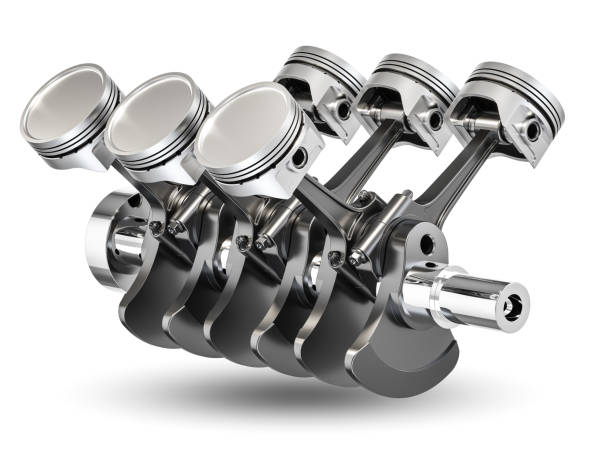
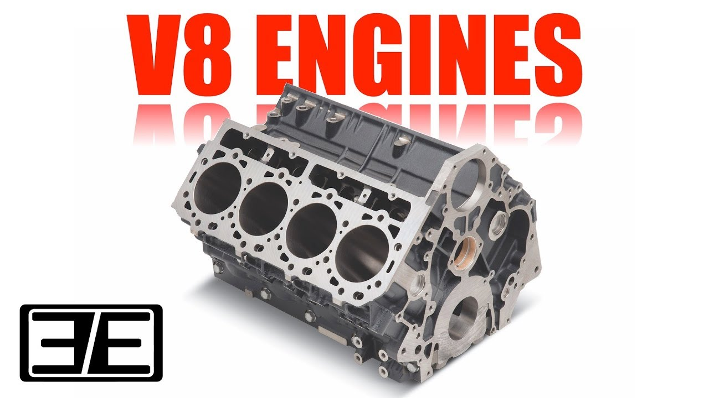
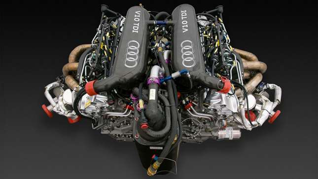
Het ontwerp van deze motoren is gericht op het maximaliseren van de lucht- en brandstoftoevoer, met behulp van geavanceerde technologieën zoals directe brandstofinjectie, variabele kleptiming en meerdere kleppen per cilinder. Dit stelt supercars in staat om indrukwekkende acceleratietijden te bereiken, zoals 0-100 km/u in minder dan drie seconden.
Paardenkracht (hp):
Horsepower (HP) is een maateenheid voor het meten van vermogen, vooral in auto's en motoren. Het geeft aan hoe krachtig een motor is en wordt gebruikt om prestaties te meten. Hoe meer paardenkrachten, hoe sterker de motor.
Koppel (Torque):
Koppel, ook wel bekend als draaimoment, is een cruciale factor in de prestaties van supercars. Het koppel is het draaiende kracht van de motor en is verantwoordelijk voor de indrukwekkende acceleratie die supercars bieden. Wat supercars echt onderscheidt, is dat ze een hoog koppel kunnen leveren bij lage toerentallen. Dit betekent dat zelfs bij lage snelheden, wanneer de bestuurder het gaspedaal intrapt, de auto onmiddellijk reageert en snelheid wint. Dit is cruciaal voor het soepele en krachtige karakter van supercars.
Het hoge koppel zorgt er ook voor dat supercars gemakkelijk kunnen versnellen vanuit stilstand en snelheden kunnen bereiken die ver buiten het bereik van gewone auto's liggen. Dit is de reden waarom supercars vaak de ultieme voertuigen zijn voor liefhebbers van snelheid en adrenaline.
Turbochargers:
Turbochargers zijn een geavanceerde technologie die vaak wordt gebruikt in supercars om hun vermogen te vergroten. Deze apparaten comprimeren de inlaatlucht voordat deze de motor binnengaat, wat resulteert in een grotere hoeveelheid lucht en brandstof die in elke cilinder wordt geperst. Dit verhoogt de explosiekracht en verhoogt het vermogen van de motor aanzienlijk.
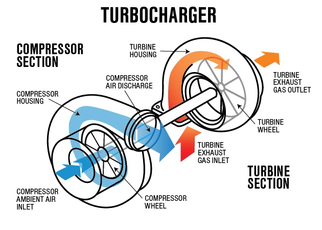
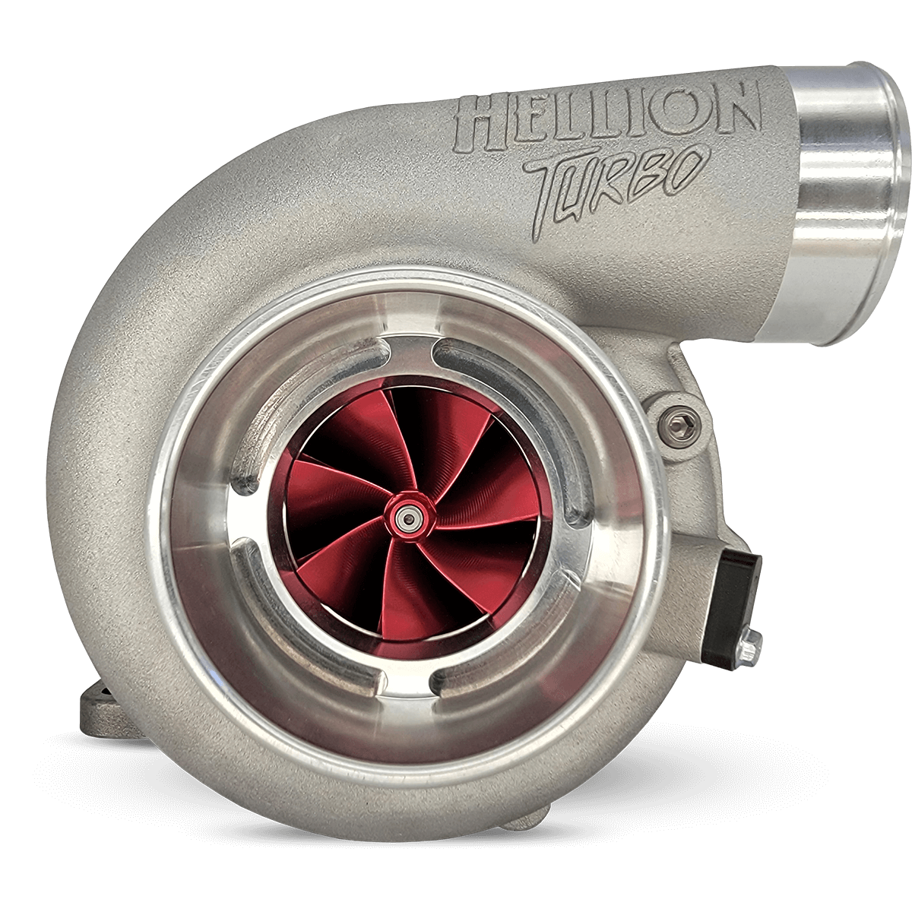
Het opmerkelijke aan turbochargers is hun vermogen om zelfs kleinere motoren te voorzien van enorme hoeveelheden vermogen. Dit stelt supercars in staat om zowel indrukwekkende snelheden als efficiëntie te bereiken, omdat de turbocompressie zorgt voor meer vermogen zonder een grotere cilinderinhoud.
Superchargers:
Superchargers zijn alternatieve krachtbronnen die vaak in supercars worden gebruikt. In tegenstelling tot turbochargers, worden superchargers rechtstreeks aangedreven door de motor. Ze draaien met de krukas en comprimeren de inlaatlucht, waardoor meer lucht in de motor wordt geperst. Dit levert direct extra vermogen op, zonder de vertraging die soms geassocieerd wordt met turbochargers.
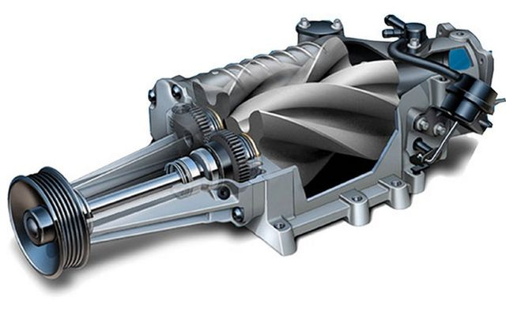
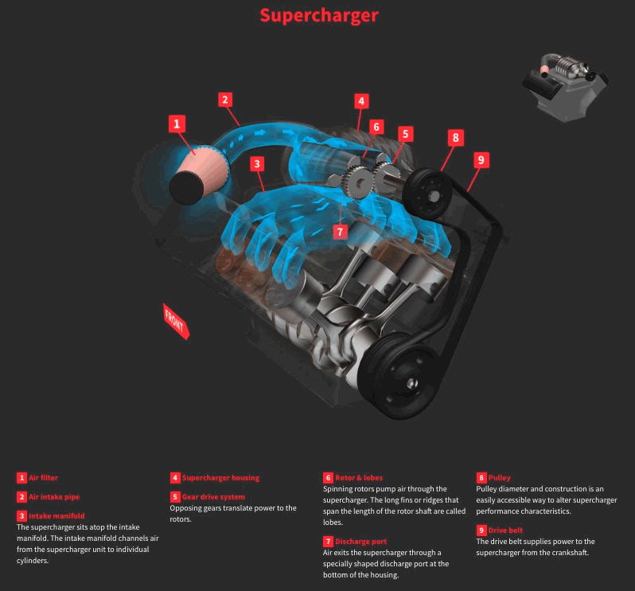
Het gebruik van superchargers in supercars resulteert in een zeer lineaire vermogensafgifte. Dit betekent dat het vermogen gestaag toeneemt naarmate de toerentallen stijgen, wat een soepele acceleratie en een onmiddellijke reactie op het gaspedaal oplevert.
Motorgeluid:
Het kenmerkende geluid van supercarmotoren is een essentieel aspect van hun aantrekkingskracht. Dit unieke geluid is het resultaat van de complexe uitlaatconfiguratie en de hoge toerentallen van de motoren. Terwijl gewone auto's vaak een bescheiden motorgeluid hebben, produceren supercars een diepe, bulderende roffel die de grond doet trillen. Dit geluid weerspiegelt de brute kracht van de motor en draagt bij aan de emotionele verbinding die bestuurders hebben met hun supercars. Het is een auditieve herinnering aan de opwinding en prestaties die deze voertuigen bieden, en het is een geluid dat herkenbaar is voor autoliefhebbers over de hele wereld.
Exclusiviteit en Design:
Supercars zijn niet alleen technische wonderen; ze zijn ook kunstwerken op wielen. Deze auto's worden vaak ontworpen met oog voor esthetiek en details. Hun aerodynamische vormen, opvallende carrosseriekleuren en onderscheidende designelementen maken ze tot visuele meesterwerken. Bovendien worden veel supercars op bestelling gemaakt, waardoor eigenaren de mogelijkheid hebben om hun voertuigen aan te passen aan hun eigen smaak en specificaties.
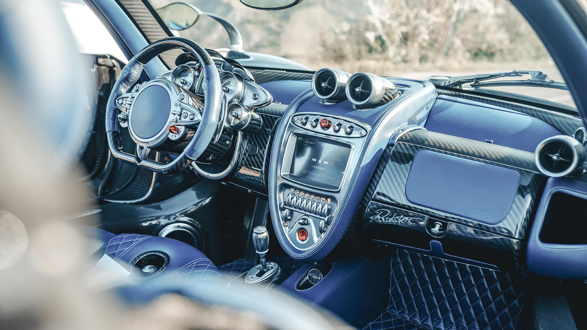
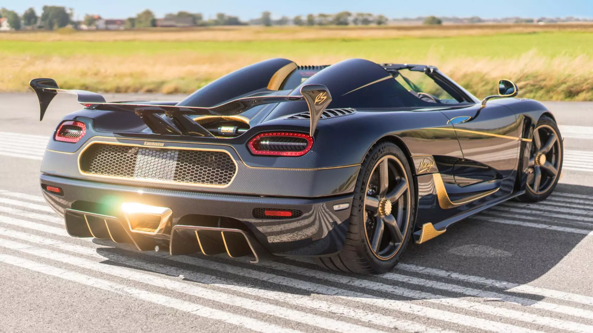
De exclusiviteit van supercars wordt versterkt door hun beperkte productieaantallen. Slechts een handvol wordt elk jaar geproduceerd, wat ze zeldzaam en gewild maakt. Voor veel autoliefhebbers zijn supercars niet alleen voertuigen; het zijn kunstwerken die een gevoel van luxe en prestige uitstralen.
Race-erfgoed:
Een belangrijk aspect dat supercars onderscheidt, is hun nauwe band met de autosport. Veel supercar-merken hebben een rijke geschiedenis in de motorsport, en deze erfenis is duidelijk te zien in de technologieën en innovaties die ze in hun straatvoertuigen gebruiken. Supercars worden vaak gebouwd met de geest van competitie in gedachten, wat resulteert in auto's met uitzonderlijke prestaties en handling.
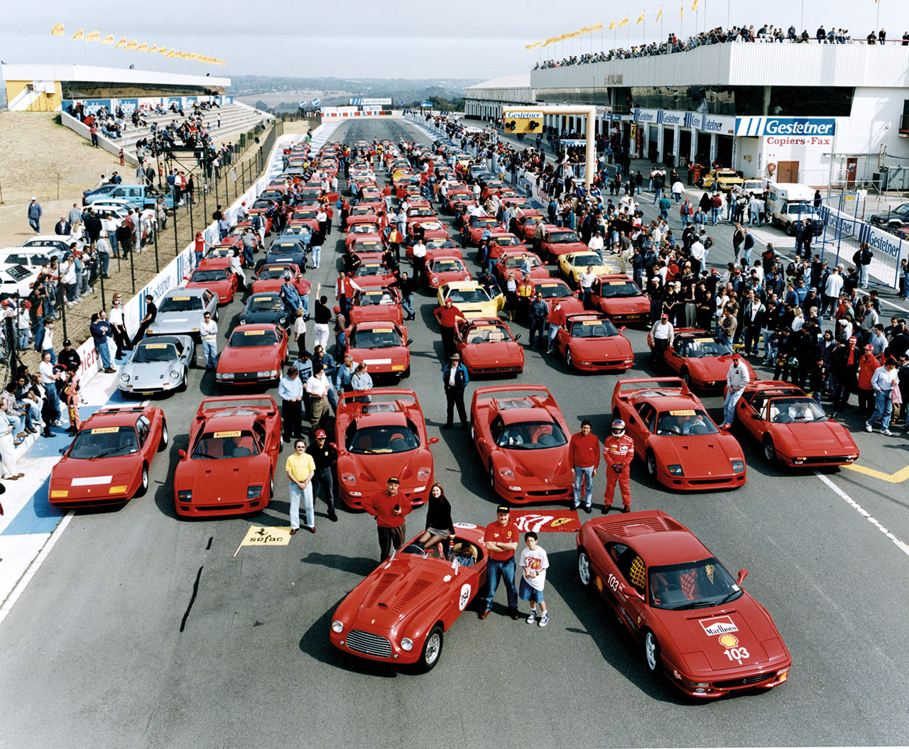
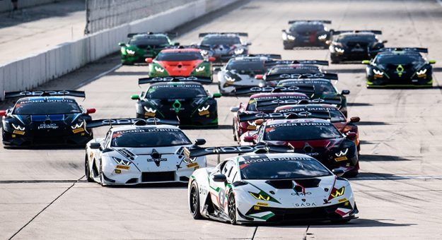
Technologieën zoals geavanceerde aerodynamica, koolstofvezel carrosserieën en geavanceerde ophangingssystemen worden vaak rechtstreeks overgedragen van raceauto's naar supercars. Dit geeft supercars niet alleen indrukwekkende snelheid, maar ook ongeëvenaarde bochtenprestaties en grip op de weg.
Rijervaring:
De rijervaring in een supercar is zonder twijfel een van de meest opwindende en onvergetelijke aspecten van deze voertuigen. Supercars bieden een ongekende combinatie van kracht, snelheid, precisie en sensatie. Ze zijn ontworpen om responsief te zijn en te reageren op elke stuurbeweging en gaspedaalinput. Het gevoel van snelheid is ronduit adembenemend, en supercars kunnen bochten met verbazingwekkende precisie nemen, dankzij geavanceerde ophangingssystemen en bandentechnologieën. De bestuurder voelt zich verbonden met de weg en ervaart een intens gevoel van controle en opwinding. In de onderstaande video, wordt de snelste rondetijd op de Nurburgring gezet door een van de meest downforce creërende auto.
Verwijzingen naar Iconische Modellen:
Iconische supercar-modellen hebben de lat voor snelheid en prestaties verhoogd en worden vaak beschouwd als de belichaming van autodromen. Enkele van deze legendarische modellen omvatten de Bugatti Veyron, Lamborghini Aventador, Ferrari LaFerrari, McLaren P1 en Porsche 911 GT2 RS, om er maar een paar te noemen. Deze auto's hebben de grenzen van technologische innovatie en prestaties verlegd en blijven inspiratiebronnen voor autoliefhebbers over de hele wereld.
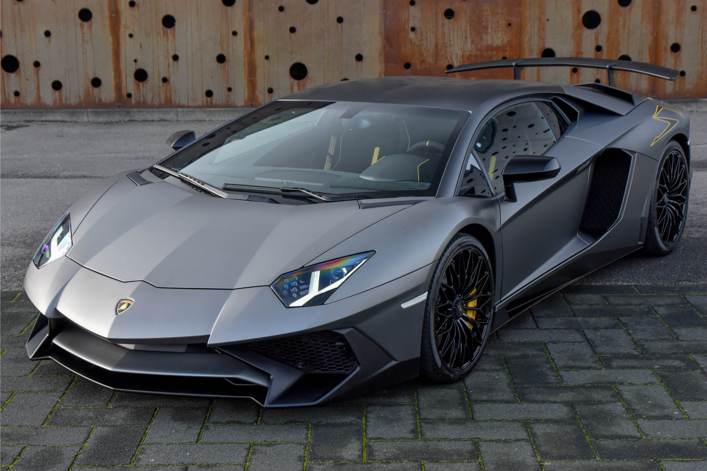
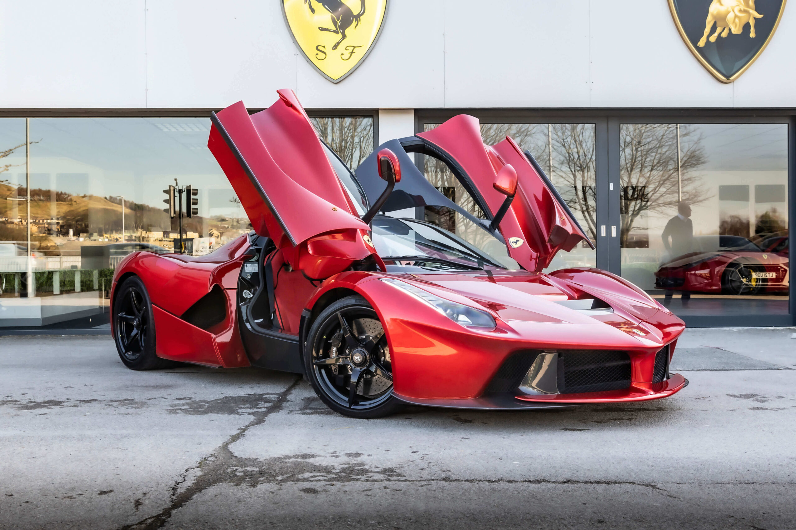
Op de volgende twee pagina's wordt er meer laten zien van supercars en de circuits die van toepassing zijn.